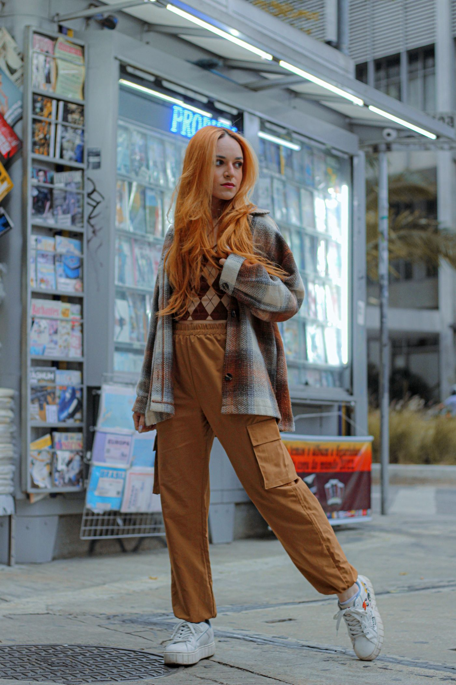
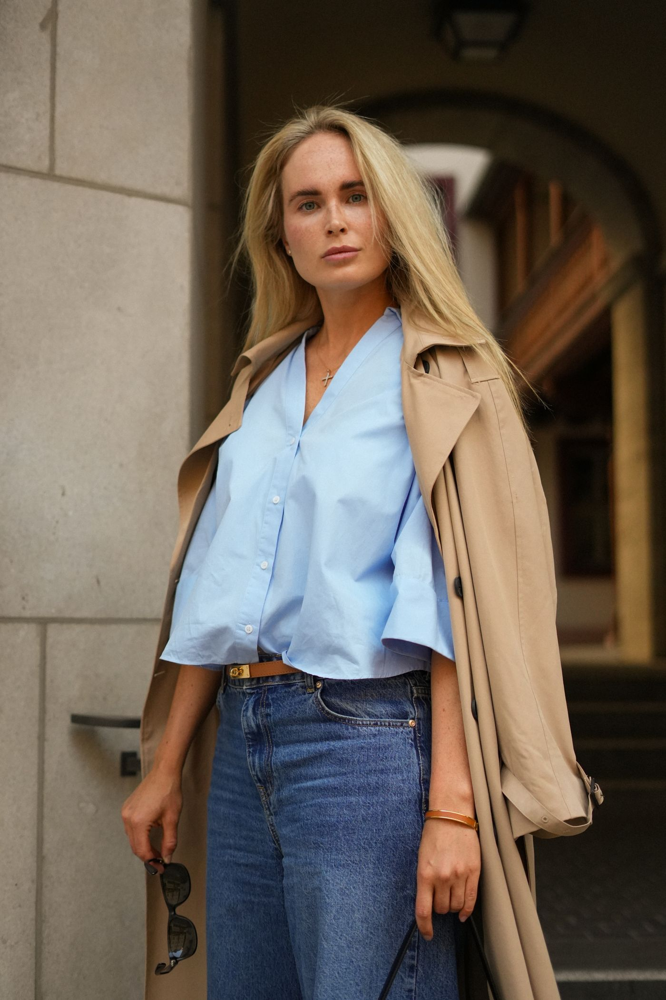

Jouw stad.
Jouw silhouet.
Nieuwe verhoudingen. Eigen ritme.
Bekijk de City Edit

Van vroeg tot veel later.
Laag over laag, een andere schoen, een jas over je arm. The City Edit laat ruimte voor de rest van je dag.

In beweging
Stijl die meebeweegt met waar je heen wilt.
See you around.
Bekijk de City Edit